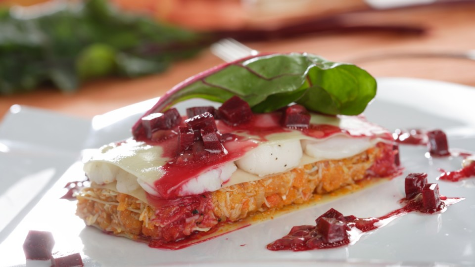

Lasaña de txangurro con vieiras
Asi lo cocinamos
Cocemos las plazas de lasaña en agua con una pizca de sal. Pelamos y picamos la cebolla. Lavamos y partimos en trocitos el pimiento. En una sartén con aceite de oliva sofreímos ambos.
Cuando poche agregamos la carne de buey de mar. Removemos y agregamos un poco de brandy. Dejamos que se evapore el alcohol y añadimos entonces un poco de salsa de tomate. Dejamos que se sofría todo bien. Rectificamos de sal.
En una plancha con aceite de oliva salteamos las vieiras salpimentadas. Dejamos que se hagan por todos lados. En una bandeja con algo de fondo vamos colocando las placas de lasaña.
Colocamos encima el sofrito de txangurro y cubrimos con otras placas de lasaña. Encima colocamos las vieiras y volvemos a cubrir con otra capa
Trucos y consejos
Si rematas esta lasaña con una suave vinagreta de remolacha darás color y sabor al plato.
Informacion Nutricinal
El buey de mar es un marisco de la familia de los crustáceos. Es rico en proteínas y minerales como yodo, sodio y potasio. En general, los mariscos están desaconsejados en caso de hiperuricemia o gota por su aporte de purinas.
El sofrito de verduras enriquece el plato con sustancias muy beneficiosas para la salud y las láminas de pasta sumarán hidratos de carbono.